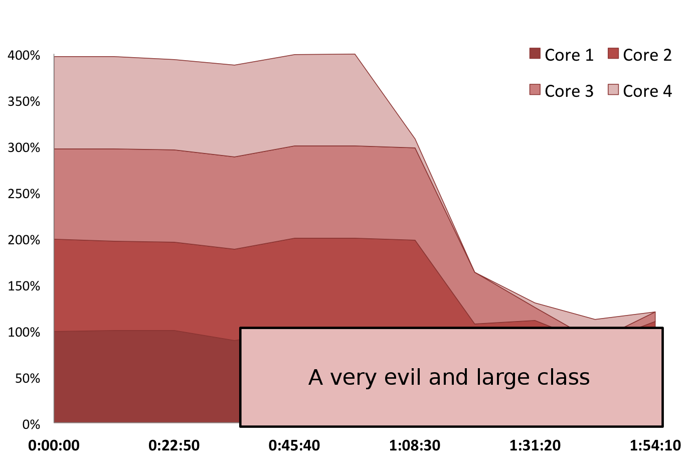

Sometimes, the tests leave a lot to be desired
public class NodeMapperTest {
@Test
public void testGetMachineById() {
// The boss says we should write tests.
// Well, here you are. He-he.
Assert.assertTrue(true);
}
}
And we can check that using Code Coverage
$ mvn clean -Dtest=NodeMapperTest#testGetMachineById test jacoco:report
public class NodeMapper {
//...
public String getMachineById(long nodeId) {
if(nodeId2machine.containsKey(nodeId)) {
return nodeId2machine.get(nodeId);
} else {
return DEFAULT_MACHINE_NAME;
}
}
}
But Code Coverage is easily tricked
private static final Map<String, List<Long>> MACHINES = /* ... */
@Test
public void testGetMachineById2() {
NodeMapper nodeMapper = new NodeMapper(MACHINES);
nodeMapper.getMachineById(0);
nodeMapper.getMachineById(1);
}
And the reports are saying it's cool
$ mvn clean -Dtest=NodeMapperTest#testGetMachineById2 test jacoco:report
public class NodeMapper {
//...
public String getMachineById(long nodeId) {
if(nodeId2machine.containsKey(nodeId)) {
return nodeId2machine.get(nodeId);
} else {
return DEFAULT_MACHINE_NAME;
}
}
}
> Code Coverage: 100%
(except that it's not cool at all)
Mutation Analysis judges the judges
- Run the tests
- Change the sources
- Run the tests again
- Some tests have to fail
If a change is not making any test fail, the line is not covered.
Otherwise, the changed line is considered to be covered
The notion itself is not new at all
- Richard Lipton suggested the idea 1971
- Timothy Budd implemented the first FORTRAN framework in 1979[1]

There are few good java libraries out there
- Javalanche
- Jumble
- Jester
- Simple Jester
All of the above are not good, as they are (at least one of)
- Abandoned
- Outdated
- Painfully slow
- Don't support the required frameworks
Then there's pitest aka PIT
- Actively developed
- Acceptable performance
- Open Source
- Supports Java 7, Maven, JUnit, *Mock* etc.
Comparison table[2]
| System | Ant | Maven | Java 7 | TestNG | *Mock* | Last Updated |
| Javalanche | NO | NO | NO | NO | ? | 2011 |
| Jumble | YES | NO | NO | NO | 3/6 | 2013 |
| Jester | NO | NO | NO | NO | ? | 2005 |
| Simple Jester | NO | NO | NO | NO | ? | 2009 |
| PIT | YES | YES | YES | YES | 6/6 | Yesterday |
Pitest rocks!
PIT detects the useless test
$ mvn clean -Dtest=NodeMapperTest#testGetMachineById2 test pitest:mutationCoverage
7 33 34 35 36 37 38 39 40 41 |
public class NodeMapper {
//...
public String getMachineById(long nodeId) {
if(nodeId2machine.containsKey(nodeId)) {
return nodeId2machine.get(nodeId);
} else {
return DEFAULT_MACHINE_NAME;
}
}
} |
PIT messes with your code (1)
public String getMachineById(long nodeId) {
if(!nodeId2machine.containsKey(nodeId)) {
return nodeId2machine.get(nodeId);
} else {
return DEFAULT_MACHINE_NAME;
}
}
PIT messes with your code (2)
public String getMachineById(long nodeId) {
if(nodeId2machine.containsKey(nodeId)) {
if(nodeId2machine.get(nodeId) != null) {
return null;
} else {
throw new RuntimeException();
}
} else {
return DEFAULT_MACHINE_NAME;
}
}
PIT messes with your code (3)
public String getMachineById(long nodeId) {
if(nodeId2machine.containsKey(nodeId)) {
return nodeId2machine.get(nodeId);
} else {
if(DEFAULT_MACHINE_NAME != null) {
return null;
} else {
throw new RuntimeException();
}
}
}
So we have to write a proper test this time
@Test
public void testGetMachineById3() {
NodeMapper nodeMapper = new NodeMapper(MACHINES);
Assert.assertEquals(NodeMapper.DEFAULT_MACHINE_NAME, nodeMapper.getMachineById(0));
Assert.assertEquals(TEST_MACHINE_NAME, nodeMapper.getMachineById(1));
}
$ mvn clean -Dtest=NodeMapperTest#testGetMachineById3 test pitest:mutationCoverage
7 33 34 35 36 37 38 39 40 41 |
public class NodeMapper {
//...
public String getMachineById(long nodeId) {
if(nodeId2machine.containsKey(nodeId)) {
return nodeId2machine.get(nodeId);
} else {
return DEFAULT_MACHINE_NAME;
}
}
} |
- 34: negated conditional : KILLED
- 35: mutated return of Object value /* ... */ : KILLED
- 37: mutated return of Object value /* ... */ : KILLED
PIT has also found a bug
7 14 26 27 33 34 35 36 37 38 39 40 41 |
public class NodeMapper {
public NodeMapper(Map<~> machines, String defaultMachineName) {
//...
this.defaultMachineName = defaultMachineName;
}
public String getMachineById(long nodeId) {
if(nodeId2machine.containsKey(nodeId)) {
return nodeId2machine.get(nodeId);
} else {
return DEFAULT_MACHINE_NAME; // <-- oops!
}
}
} |
- 26: Removed assignment to member variable defaultMachineName : SURVIVED
Test your stuff in three easy steps
- Pick stuff to mutate
- Mutate said stuff
- Check if stuff fails
Picking stuff to mutate
- Compile the sources to bytecode
- Run the selected tests
- Gather detailed Code Coverage info:
which tests execute which instructions
Creating mutant overlords
- Use ASM to generate mutations
-
The mutations must be predictable and stable.
The behavior may not change between runs -
Avoid false positives
Equivalent mutation: a mutation which results in no observable change in behavior
CONDITIONALS_BOUNDARY
[on by default]
Changes the inequalities checks from strict to non-strict and vice versa
Before: if (a < b) {
// do something
}
|
After: if (a <= b) {
// do something
}
|
NEGATE_CONDITIONALS [on by default]
Negates Conditionals
Before: if (foo()) {
// do something
}
|
After: if (!foo()) {
// do something
}
|
MATH [on by default]
Replaces binary operations by their counterparts
Before: int foo = bar + baz; |
After: int foo = bar - baz;
|
Also mutates field increments/decrements
class Foo {
private int a;
//...
void bar() {
a++;
}
}
|
→ |
0: aload_0
1: dup
2: getfield
5: iconst_1
6: iadd # ← addition
7: putfield
10: return
|
INCREMENTS [on by default]
Swaps increments to decrements and vice versa
Before: counter ++; |
After: counter --;
|
NB: only works on local variables
INVERT_NEGS [on by default]
Removes the unary minus operator
Before: int a = -b; |
After: int a = b;
|
RETURN_VALS [on by default]
Changes the value returned by a method
Before: public int foo() {
//...
return true;
}
|
After: public int foo() {
//...
return false;
}
|
VOID_METHOD_CALLS [on by default]
Removes a call to a void method
|
Before: public void foo() {/* ... */ }
public void bar() {
//...
foo();
}
|
After: public void foo() {/* ... */ }
public void bar() {
//...
}
|
INLINE_CONSTS [off by default]
Changes literal values assigned to locals
Before: public int foo() {
int answer = 42;
}
|
After: public int foo() {
int answer = 43;
}
|
Could spawn lots of RuntimeExceptions
NON_VOID_METHOD_CALLS
[off by default]
Removes a method call, replaces by assigning the default value
|
Before: public String foo() {/* ... */ }
public void bar() {
//...
String foo = foo();
}
|
After: public String foo() {/* ... */ }
public void bar() {
//...
String foo = null;
}
|
Could spawn lots of NullPointerExceptions and equivalent mutations
CONSTRUCTOR_CALLS [off by default]
Removes a constructor call, to be replaced by assignment of null
|
Before: public void bar() {
Object foo = new Object();
}
|
After: public void bar() {
Object foo = null;
}
|
Spawns lots of NullPointerException
EXPERIMENTAL_INLINE_CONSTS
[off by default]
Here to replace INLINE_CONSTS, has more consistent behavior
|
Before: short s = Byte.MAX_VALUE; |
After: short s = Byte.MIN_VALUE;
|
EXPERIMENTAL_MEMBER_VARIABLE
[off by default]
Replaces values asigned to fields by default values
|
Before: public class Foo {
private int magic = 13;
//...
}
|
After: public class Foo {
private int magic = 0;
//...
}
|
Could generate lots of equivalent mutations
EXPERIMENTAL_SWITCH [off by default]
|
Before: int a;
//...
switch(a) {
case 1: doFirst(); break;
case 2: doSecond(); break;
default: doDefault(); break;
}
|
After: int a;
//...
switch(a) {
case 1: doDefault(); break;
case 2: doDefault(); break;
default: doFirst(); break;
}
|
Running the analysis
- Pick a mutant
- Use Instrumentation API to replace the original
-
Run the tests until one of them fails (and hence kills the mutant)
Watch out for:- Tests working way too long (could have introduced an infinite loop)
- Out Of Memory errors (could have introduced a memory leak)
- JVM crashing (you get the idea)
- Runtime exceptions (not conclusive)
Unit of work is a source class
The three rules of TDD

The first rule of TDD is
You do not write any production code
Unless it is to make a failing unit test pass
The second rule of TDD is
You do not write any more of a unit test than is sufficient to fail
And compilation failures are failures
The third rule of TDD is
You do not write any production code
More than is sufficient to pass the one failing unit test
PIT grants you confidence in your tests
A success story from TheLadders.com[4]
- A project from scratch, PIT used from the stard
- Code and Mutation Coverage of about 95%
- Needed to refactor the core to use event sourcing
- The code was refactored, the tests greened out, and it was rolled out
- Not a single issue!*
Okay, that must be excruciatingly slow!
Let's take an allegedly well-covered library and give it a go
Apache commons-math
- Loads of complex mathematical algorithms
- 177K lines of source code
- About 5000 tests in 109K lines of code
$ ./prepare-commons-math3.sh && cd commons-math3 + svn checkout http://svn.apache.org/repos/asf/commons/proper/math/trunk@1455261 commons-math3 A commons-math3/RELEASE-NOTES.txt A commons-math3/... U commons-math3 Checked out revision 1455261. + patch commons-math3/pom.xml commons-math3-pom-patch.diff patching file commons-math3/pom.xml
Baseline: good old Code Coverage
$ mvn clean test jacoco:report ... Results : Tests run: 4901, Failures: 0, Errors: 0, Skipped: 43 [INFO] [INFO] --- jacoco-maven-plugin:0.6.2.201302030002:report (default-cli) @ commons-math3 --- [INFO] ------------------------------------------------------------------------ [INFO] BUILD SUCCESS [INFO] ------------------------------------------------------------------------ [INFO] Total time: 7:46.820s
The total Code Coverage is impressive: 92%
Don't forget to exclude that from your stats.
The rule of thumb is that you should not make bad benchmarks and make good ones instead.
Mutation Analysis
$ mvn clean test pitest:mutationCoverage ... ================================================================================ - Timings ================================================================================ > scan classpath : < 1 second > coverage and dependency analysis : 27 minutes and 31 seconds > build mutation tests : 7 seconds > run mutation analysis : 3 hours, 47 minutes and 7 seconds -------------------------------------------------------------------------------- > Total : 4 hours, 14 minutes and 46 seconds
The total Mutation Coverage is 79%
We could throw in more threads
$ mvn clean test pitest:mutationCoverage -Dpit.threads=2 ... ================================================================================ - Timings ================================================================================ > scan classpath : < 1 second > coverage and dependency analysis : 27 minutes and 28 seconds > build mutation tests : 3 seconds > run mutation analysis : 2 hours, 2 minutes and 1 seconds -------------------------------------------------------------------------------- > Total : 2 hours, 29 minutes and 33 seconds
The improvement is nearly linear
CPU load over time
CPU load over time
Improved in pitest 0.30
Improved further in pitest 0.31


Incremental analysis
Some metadata is stored in-between runs
- The hashes of all tested classes
- The hashes of all the tests
- Analysis results
During each following run, some heuristics are applied.
A mutant will not be checked again, if the last time it:
- timed out, and the class has not changed
- was killed, and neither the class nor the test have changed
- survived, and there are no new/changed tests for it
Okay, what of the dependencies?
PIT only considers the changed make to superclasses or outer classes (if any)
It does not take into account changes made to dependencies
Overhead induced by incremental analysis
$ mvn clean test pitest:mutationCoverage -P pit-history -Dpit.threads=4 ... ================================================================================ - Timings ================================================================================ > scan classpath : < 1 second > coverage and dependency analysis : 7 minutes and 15 seconds > build mutation tests : 2 seconds > run mutation analysis : 55 minutes and 41 seconds -------------------------------------------------------------------------------- > Total : 1 hours, 2 minutes and 59 seconds
Meta-info is saved nearly for free
PIT has found some useless code!
193 194 195 196 197 198 199 200 201 202 203 204 |
// In org.apache.commons.math3.linear.MatrixUtils
public static <T extends FieldElement<T>> FieldMatrix<T>
createFieldIdentityMatrix(final Field<T> field, final int dimension) {
final T zero = field.getZero();
final T one = field.getOne();
final T[][] d = MathArrays.buildArray(field, dimension, dimension);
for (int row = 0; row < dimension; row++) {
final T[] dRow = d[row];
Arrays.fill(dRow, zero);
dRow[row] = one;
}
return new Array2DRowFieldMatrix<T>(field, d, false);
} |
Mutations
- 200: removed call to java/util/Arrays::fill : SURVIVED
Let's run the tests on the updated code base
$ mvn clean test pitest:mutationCoverage -P pit-history -Dpit.threads=24 ... ================================================================================ - Timings ================================================================================ > scan classpath : < 1 second > coverage and dependency analysis : 7 minutes and 3 seconds > build mutation tests : 1 minutes and 1 seconds > run mutation analysis : 56 seconds -------------------------------------------------------------------------------- > Total : 9 minutes and 0 seconds --------------------------------------------------------------------------------
The elapsed time is negligible on simpler projects
Joda Time ‐ an awesome library that lets youwork with dates and times
- 68K lines of code
- 70K lines of test code
Mutation analysis is done in under 7 minutes
Probably, there's nothing perfect in existence
PIT is not perfect either
public int evaluate(final int distance) {
if(distance == 0) {
throw new IllegalArgumentException("Distance should be non-zero");
}
int result = 0;
if(distance > 0) {
result += calculateDistanceAdjustment(distance);
}
return result;
}
PIT vs Defensive Programming
5 6 7 8 9 10 11 12 13 14 15 16 17 |
public int evaluate(final int distance) {
if(distance == 0) {
throw new IllegalArgumentException("Distance should be non-zero");
}
int result = 0;
if(distance > 0) {
result += calculateDistanceAdjustment(distance);
}
return result;
} |
Mutations
- 12: changed conditional boundary → SURVIVED
PIT vs Dangerous Code
public static void rectify(String path) {
ensurePathIsSecure(path);
rmRf(path);
}
private static final void rmRf(String path) {
System.out.println("$ rm -rf " + path);
// Actually remove the directory
}
I accidentally your data
stderr : PIT >> Running mutation [...] mutator=VoidMethodCallMutator, description=removed call to Minitrue::ensurePathIsSecure testsInOrder=[MinitrueTest.testRectifySecurity [...]] stderr : PIT >> mutating method rectify stderr : PIT >> 2 relevant test for rectify stderr : PIT >> replaced class with mutant in 2 ms stderr : PIT >> Running 1 units stdout : $ rm -rf /
Reading material
- Mutation Analysis [1979]: Budd, Lipton, DeNillo, Sayward
http://www.cs.yale.edu/publications/techreports/tr155.pdf -
Detailed comparison of java mutation testing frameworks
http://pitest.org/java_mutation_testing_systems -
The three laws of TDD
http://butunclebob.com/ArticleS.UncleBob.TheThreeRulesOfTdd -
Mutation Testing With PIT: A Step Beyond Normal Code Coverage
http://dev.theladders.com/2013/02/mutation-testing-with-pit-a-step-beyond-normal-code-coverage/
Do It Yourself
$ git clone git@github.com:gvsmirnov/docs.git $ cd docs/presentations/java-mutation-testing
See this presentation again
http://gvsmirnov.ru/docs/presentations/java-mutation-testing/
Is sure to work in Webkit-based browsers on Mac OS, may have issues on other browsers/platforms